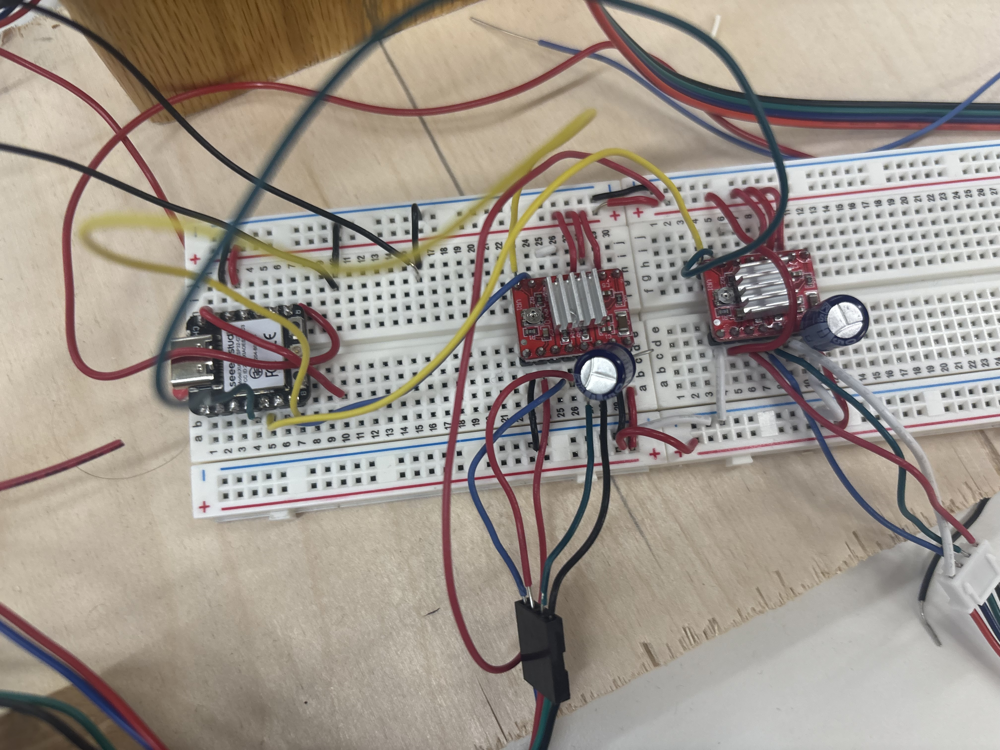
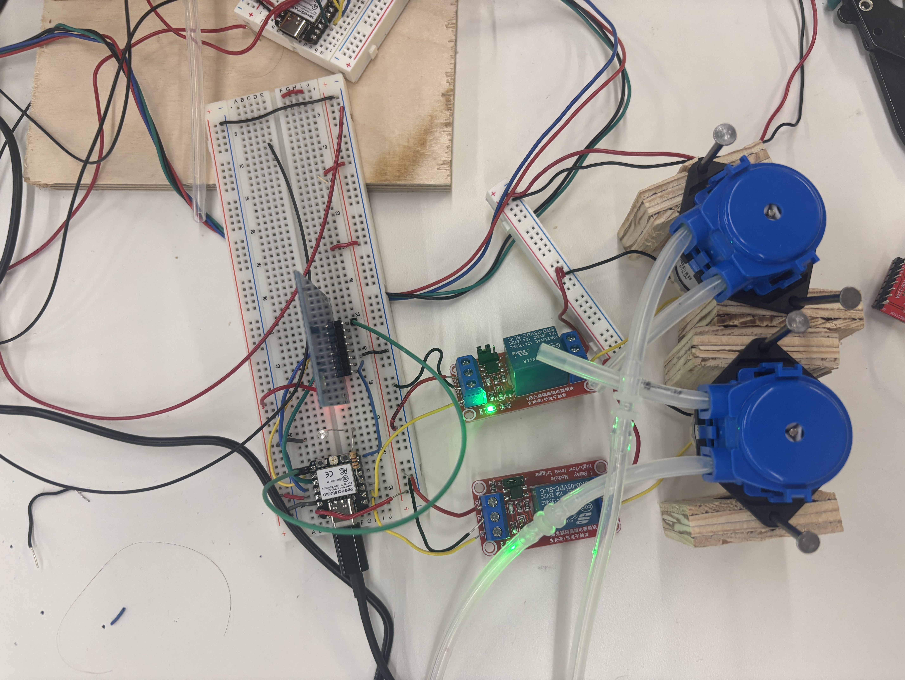
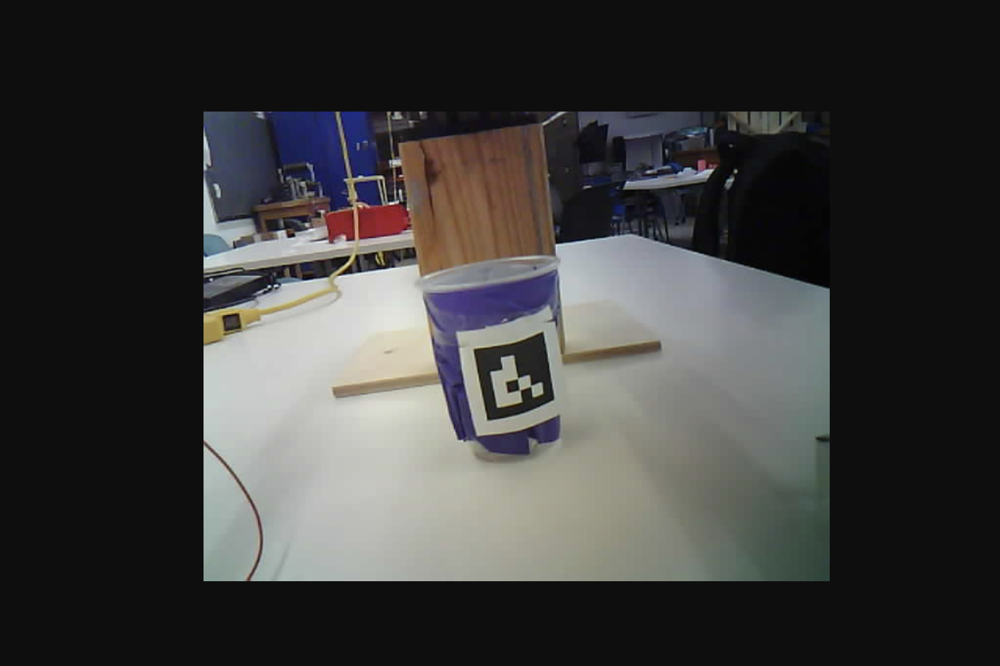

<div class="textcontainer">
<p class="margin"> </p>
<h3>Weeks 10-12: Machine Building</h3>
<h4>Assignment: Build a Drawing Robot</h4>
Our "Drawing" Machine was designed in a way that stretches the definition of drawing.
The machine identifies cups placed inside of it's area and moves above the cup and dispenses different amounts of two different liquids based on inputs given for a website.
We had a lot of difficulties getting the connections to be consistent and to get the stepper motors to move properly.
Vlad did the camera and it was also a very challening endeavor.
Lynn did the valve system and figured out the stepper motors.
We all contributed well.
Here is all of the code we wrote for each individual part.
Drink Dispenser
<pre style="max-height: 400px; overflow-y: auto; background: #1e1e1e; color: #d4d4d4; padding: 16px; border-radius: 8px; font-size: 14px;">
<code>
#include <WiFi.h>
#include <AsyncTCP.h>
#include <ESPAsyncWebServer.h>
#include <ArduinoJson.h>
#include <SPI.h>
#include <MFRC522.h>
// wifi credentials
const char* ssid = "MAKERSPACE";
const char* password = "12345678";
// pins
#define PUMP1_PIN D0
#define PUMP2_PIN D1
#define LED_PIN D3
#define RFID_SS_PIN D7
#define RFID_RST_PIN D6
// web initialization
AsyncWebServer server(80);
AsyncWebSocket ws("/ws");
// rfid
MFRC522 rfid(RFID_SS_PIN, RFID_RST_PIN);
// pump configs
const int NUM_PUMPS = 2;
struct PumpConfig {
const char* name;
uint8_t pin;
};
PumpConfig pumps[NUM_PUMPS] = {
{"Pump 1", PUMP1_PIN},
{"Pump 2", PUMP2_PIN}
};
// machine state
String currentCupUID = "";
bool cupScanned = false;
bool machineBusy = false;
float currentTotalOz = 6.8f;
bool startRequested = false;
int currentRecipePercent[NUM_PUMPS] = {50, 50};
// simultaneous dispense state
bool dispenseActive = false;
unsigned long dispenseStartMs = 0;
int activePumpTimesMs[NUM_PUMPS] = {0, 0};
bool pumpRunning[NUM_PUMPS] = {false, false};
// cup profiles
const int MAX_CUPS = 20;
struct CupProfile {
bool used;
String uid;
float totalOz;
int recipePercent[NUM_PUMPS];
};
CupProfile cupProfiles[MAX_CUPS];
// calibration
const int NUM_CAL_POINTS = 8;
float calOz[NUM_CAL_POINTS] = {1, 2, 3, 4, 5, 6, 7, 8};
int calMs[NUM_CAL_POINTS] = {20460, 34383, 51676, 71567, 89269, 99657, 119540, 133091};
// ==================== Helpers ====================
int ouncesToMs(float oz) {
if (oz <= 0.01f) return 0;
if (oz <= calOz[0]) {
return (int)round((oz / calOz[0]) * calMs[0]);
}
for (int i = 0; i < NUM_CAL_POINTS - 1; i++) {
if (oz >= calOz[i] && oz <= calOz[i + 1]) {
float t = (oz - calOz[i]) / (calOz[i + 1] - calOz[i]);
return (int)round(calMs[i] + t * (calMs[i + 1] - calMs[i]));
}
}
int last = NUM_CAL_POINTS - 1;
float slope = (float)(calMs[last] - calMs[last - 1]) / (calOz[last] - calOz[last - 1]);
return (int)round(calMs[last] + (oz - calOz[last]) * slope);
}
void computePumpTimes(float totalOz, const int recipePercent[], int pumpTimesMs[], int numPumps) {
for (int i = 0; i < numPumps; i++) {
float pumpOz = totalOz * (recipePercent[i] / 100.0f);
pumpTimesMs[i] = ouncesToMs(pumpOz);
}
}
String uidToString(MFRC522::Uid *uid) {
String result = "";
for (byte i = 0; i < uid->size; i++) {
if (uid->uidByte[i] < 0x10) result += "0";
result += String(uid->uidByte[i], HEX);
if (i < uid->size - 1) result += " ";
}
result.toUpperCase();
return result;
}
int percentTotal(const int arr[NUM_PUMPS]) {
int total = 0;
for (int i = 0; i < NUM_PUMPS; i++) total += arr[i];
return total;
}
int findCupProfileIndex(const String& uid) {
for (int i = 0; i < MAX_CUPS; i++) {
if (cupProfiles[i].used && cupProfiles[i].uid == uid) {
return i;
}
}
return -1;
}
int createCupProfile(const String& uid) {
for (int i = 0; i < MAX_CUPS; i++) {
if (!cupProfiles[i].used) {
cupProfiles[i].used = true;
cupProfiles[i].uid = uid;
cupProfiles[i].totalOz = 6.8f;
cupProfiles[i].recipePercent[0] = 50;
cupProfiles[i].recipePercent[1] = 50;
return i;
}
}
return -1;
}
void loadCupProfileToCurrent(int idx) {
currentTotalOz = cupProfiles[idx].totalOz;
for (int i = 0; i < NUM_PUMPS; i++) {
currentRecipePercent[i] = cupProfiles[idx].recipePercent[i];
}
}
bool saveCurrentToCupProfile() {
if (!cupScanned || currentCupUID.length() == 0) return false;
int idx = findCupProfileIndex(currentCupUID);
if (idx < 0) {
idx = createCupProfile(currentCupUID);
if (idx < 0) return false;
}
cupProfiles[idx].totalOz = currentTotalOz;
for (int i = 0; i < NUM_PUMPS; i++) {
cupProfiles[idx].recipePercent[i] = currentRecipePercent[i];
}
return true;
}
void printCurrentRecipe() {
Serial.println("=== Current Cup Recipe ===");
Serial.print("UID: ");
Serial.println(currentCupUID);
Serial.print("Drink size: ");
Serial.print(currentTotalOz, 2);
Serial.println(" oz");
for (int i = 0; i < NUM_PUMPS; i++) {
float pumpOz = currentTotalOz * (currentRecipePercent[i] / 100.0f);
Serial.print(pumps[i].name);
Serial.print(": ");
Serial.print(currentRecipePercent[i]);
Serial.print("% (");
Serial.print(pumpOz, 2);
Serial.println(" oz)");
}
Serial.print("Total: ");
Serial.println(percentTotal(currentRecipePercent));
Serial.println("==========================");
}
// ==================== JSON / WebSocket ====================
void sendJsonDoc(JsonDocument& doc) {
String out;
serializeJson(doc, out);
ws.textAll(out);
}
void sendStatus(const String& text) {
StaticJsonDocument<192> doc;
doc["type"] = "status";
doc["text"] = text;
sendJsonDoc(doc);
}
void sendError(const String& text) {
StaticJsonDocument<192> doc;
doc["type"] = "error";
doc["text"] = text;
sendJsonDoc(doc);
}
void sendFullState(bool existingRecipeLoaded = false) {
StaticJsonDocument<512> doc;
doc["type"] = "full_state";
doc["cupScanned"] = cupScanned;
doc["uid"] = currentCupUID;
doc["existingRecipeLoaded"] = existingRecipeLoaded;
doc["machineBusy"] = machineBusy;
doc["dispenseActive"] = dispenseActive;
doc["totalOz"] = currentTotalOz;
doc["percentTotal"] = percentTotal(currentRecipePercent);
JsonArray arr = doc.createNestedArray("pumps");
for (int i = 0; i < NUM_PUMPS; i++) {
arr.add(currentRecipePercent[i]);
}
sendJsonDoc(doc);
}
// ==================== RFID ====================
void checkRFID() {
if (machineBusy) return;
if (!rfid.PICC_IsNewCardPresent()) return;
if (!rfid.PICC_ReadCardSerial()) return;
String scannedUID = uidToString(&rfid.uid);
bool existingRecipeLoaded = false;
currentCupUID = scannedUID;
cupScanned = true;
int idx = findCupProfileIndex(scannedUID);
if (idx >= 0) {
loadCupProfileToCurrent(idx);
existingRecipeLoaded = true;
Serial.println("Known cup scanned. Loaded saved recipe.");
} else {
idx = createCupProfile(scannedUID);
if (idx >= 0) {
loadCupProfileToCurrent(idx);
Serial.println("New cup registered.");
} else {
Serial.println("No free cup profile slots.");
sendError("No free cup profile slots");
}
}
digitalWrite(LED_PIN, HIGH);
delay(500);
digitalWrite(LED_PIN, LOW);
Serial.print("RFID scanned: ");
Serial.println(currentCupUID);
printCurrentRecipe();
sendFullState(existingRecipeLoaded);
if (existingRecipeLoaded) {
sendStatus("Cup scanned. Saved recipe loaded.");
} else {
sendStatus("New cup registered. Controls unlocked.");
}
rfid.PICC_HaltA();
rfid.PCD_StopCrypto1();
}
// ==================== Dispense ====================
void beginDispense() {
computePumpTimes(currentTotalOz, currentRecipePercent, activePumpTimesMs, NUM_PUMPS);
dispenseStartMs = millis();
dispenseActive = true;
machineBusy = true;
digitalWrite(LED_PIN, HIGH);
for (int i = 0; i < NUM_PUMPS; i++) {
if (activePumpTimesMs[i] > 0) {
digitalWrite(pumps[i].pin, HIGH);
pumpRunning[i] = true;
float pumpOz = currentTotalOz * (currentRecipePercent[i] / 100.0f);
Serial.print("Starting ");
Serial.print(pumps[i].name);
Serial.print(" on pin ");
Serial.print(pumps[i].pin);
Serial.print(" for ");
Serial.print(activePumpTimesMs[i]);
Serial.print(" ms (");
Serial.print(pumpOz, 2);
Serial.println(" oz)");
} else {
digitalWrite(pumps[i].pin, LOW);
pumpRunning[i] = false;
}
}
sendFullState(false);
sendStatus("Dispensing...");
}
void updateDispense() {
if (!dispenseActive) return;
unsigned long elapsed = millis() - dispenseStartMs;
bool anyStillRunning = false;
for (int i = 0; i < NUM_PUMPS; i++) {
if (pumpRunning[i]) {
if ((int)elapsed >= activePumpTimesMs[i]) {
digitalWrite(pumps[i].pin, LOW);
pumpRunning[i] = false;
Serial.print("Stopped ");
Serial.println(pumps[i].name);
} else {
anyStillRunning = true;
}
}
}
if (!anyStillRunning) {
dispenseActive = false;
machineBusy = false;
digitalWrite(LED_PIN, LOW);
sendFullState(false);
sendStatus("Drink complete.");
Serial.println("All pumps finished.");
}
}
// ==================== WebSocket Receive ====================
void handleWebSocketMessage(void *arg, uint8_t *data, size_t len) {
AwsFrameInfo *info = (AwsFrameInfo*)arg;
if (!(info->final && info->index == 0 && info->len == len && info->opcode == WS_TEXT)) {
return;
}
data[len] = 0;
String incoming = (char*)data;
Serial.print("Received raw message: ");
Serial.println(incoming);
StaticJsonDocument<512> doc;
DeserializationError err = deserializeJson(doc, incoming);
if (err) {
sendError("Bad JSON");
return;
}
String type = doc["type"] | "";
if (type == "request_state") {
sendFullState(false);
if (!cupScanned) {
sendStatus("Please scan RFID cup to unlock controls.");
}
return;
}
if (type == "set_recipe") {
if (!cupScanned) {
sendError("Scan RFID cup first");
return;
}
if (machineBusy) {
sendError("Machine is busy");
return;
}
float newTotalOz = doc["totalOz"] | 6.8f;
if (newTotalOz < 1.0f) newTotalOz = 1.0f;
if (newTotalOz > 8.0f) newTotalOz = 8.0f;
JsonArray arr = doc["pumps"].as<JsonArray>();
if (arr.isNull() || arr.size() != NUM_PUMPS) {
sendError("Invalid pump array");
return;
}
int tempRecipe[NUM_PUMPS];
int runningTotal = 0;
for (int i = 0; i < NUM_PUMPS; i++) {
int value = arr[i] | 0;
if (value < 0) value = 0;
if (value > 100) value = 100;
if (runningTotal + value > 100) {
value = 100 - runningTotal;
}
tempRecipe[i] = value;
runningTotal += value;
}
currentTotalOz = newTotalOz;
for (int i = 0; i < NUM_PUMPS; i++) {
currentRecipePercent[i] = tempRecipe[i];
}
saveCurrentToCupProfile();
printCurrentRecipe();
sendFullState(false);
sendStatus("Recipe saved to this cup.");
return;
}
if (type == "start") {
if (!cupScanned) {
sendError("Scan RFID cup first");
return;
}
if (machineBusy) {
sendError("Machine is already busy");
return;
}
if (percentTotal(currentRecipePercent) != 100) {
sendError("Recipe must total exactly 100%");
return;
}
startRequested = true;
sendStatus("Start button received.");
return;
}
sendError("Unknown command type");
}
void onEvent(AsyncWebSocket *server, AsyncWebSocketClient *client,
AwsEventType type, void *arg, uint8_t *data, size_t len) {
switch (type) {
case WS_EVT_CONNECT:
Serial.printf("Client #%u connected from %s\n",
client->id(),
client->remoteIP().toString().c_str());
client->text("{\"type\":\"status\",\"text\":\"Connected. Please scan RFID cup.\"}");
break;
case WS_EVT_DISCONNECT:
Serial.printf("Client #%u disconnected\n", client->id());
break;
case WS_EVT_DATA:
handleWebSocketMessage(arg, data, len);
break;
case WS_EVT_PONG:
case WS_EVT_ERROR:
break;
}
}
void initWebSocket() {
ws.onEvent(onEvent);
server.addHandler(&ws);
}
// ==================== WiFi ====================
void initWiFi() {
WiFi.mode(WIFI_STA);
WiFi.begin(ssid, password);
Serial.print("Connecting to WiFi");
while (WiFi.status() != WL_CONNECTED) {
Serial.print(".");
delay(500);
}
Serial.println();
Serial.print("IP address: ");
Serial.println(WiFi.localIP());
}
// ==================== HTML ====================
const char index_html[] PROGMEM = R"rawliteral(
<!DOCTYPE html>
<html>
<head>
<meta name="viewport" content="width=device-width, initial-scale=1">
<title>Drink Machine</title>
<style>
* { box-sizing: border-box; }
:root {
--bg: #0b1020;
--panel: rgba(18, 25, 48, 0.84);
--panel2: rgba(28, 37, 68, 0.88);
--text: #eef2ff;
--muted: #b8c3ea;
--line: rgba(255,255,255,0.08);
--accent: #8b5cf6;
--accent2: #06b6d4;
--good: #22c55e;
--bad: #ef4444;
}
body {
margin: 0;
min-height: 100vh;
font-family: Inter, Arial, sans-serif;
color: var(--text);
background:
radial-gradient(circle at top left, rgba(139,92,246,0.28), transparent 30%),
radial-gradient(circle at top right, rgba(6,182,212,0.22), transparent 30%),
linear-gradient(160deg, #070b16 0%, #0b1020 45%, #121933 100%);
padding: 24px;
}
.app {
max-width: 920px;
margin: 0 auto;
}
.hero {
margin-bottom: 18px;
}
.hero h1 {
margin: 0 0 6px 0;
font-size: 34px;
}
.hero p {
margin: 0;
color: var(--muted);
}
.grid {
display: grid;
grid-template-columns: 1fr 1fr;
gap: 18px;
}
.card {
background: var(--panel);
border: 1px solid var(--line);
border-radius: 24px;
padding: 22px;
backdrop-filter: blur(12px);
}
.card h2 {
margin-top: 0;
margin-bottom: 12px;
}
.uid-box {
display: flex;
align-items: center;
gap: 12px;
padding: 14px 16px;
border-radius: 16px;
background: rgba(255,255,255,0.04);
border: 1px solid var(--line);
margin-bottom: 12px;
word-break: break-all;
}
.dot {
width: 12px;
height: 12px;
border-radius: 999px;
background: var(--bad);
box-shadow: 0 0 16px rgba(239,68,68,0.6);
flex-shrink: 0;
}
.dot.ok {
background: var(--good);
box-shadow: 0 0 16px rgba(34,197,94,0.7);
}
.status {
padding: 14px 16px;
border-radius: 16px;
background: var(--panel2);
border: 1px solid var(--line);
min-height: 56px;
display: flex;
align-items: center;
}
.field {
margin-top: 12px;
}
.field label {
display: block;
margin-bottom: 8px;
color: var(--muted);
font-size: 14px;
}
input[type="number"] {
width: 100%;
padding: 14px 16px;
border-radius: 16px;
border: 1px solid var(--line);
background: rgba(255,255,255,0.05);
color: var(--text);
font-size: 16px;
}
.pump-list {
display: grid;
gap: 14px;
margin-top: 16px;
}
.pump-row {
padding: 16px;
border-radius: 18px;
background: rgba(255,255,255,0.04);
border: 1px solid var(--line);
}
.pump-head {
display: flex;
justify-content: space-between;
align-items: center;
margin-bottom: 12px;
}
.pump-name {
font-weight: 700;
}
.pump-value {
min-width: 56px;
text-align: center;
padding: 6px 10px;
border-radius: 999px;
background: rgba(139,92,246,0.16);
border: 1px solid rgba(139,92,246,0.28);
color: #ddd6fe;
font-weight: 700;
}
input[type="range"] {
width: 100%;
accent-color: #8b5cf6;
}
.summary {
margin-top: 16px;
display: flex;
justify-content: space-between;
align-items: center;
gap: 16px;
padding: 14px 16px;
border-radius: 16px;
background: rgba(6,182,212,0.10);
border: 1px solid rgba(6,182,212,0.24);
}
.summary .big {
font-size: 20px;
font-weight: 800;
}
.actions {
margin-top: 18px;
display: flex;
gap: 12px;
flex-wrap: wrap;
}
button {
border: 0;
border-radius: 16px;
padding: 14px 18px;
font-size: 15px;
font-weight: 700;
color: white;
cursor: pointer;
}
.btn-save {
background: linear-gradient(135deg, #7c3aed, #8b5cf6);
}
.btn-start {
background: linear-gradient(135deg, #0891b2, #06b6d4);
}
button:disabled,
input:disabled {
opacity: 0.45;
cursor: not-allowed;
}
.helper {
color: var(--muted);
font-size: 13px;
margin-top: 10px;
line-height: 1.45;
}
@media (max-width: 820px) {
.grid {
grid-template-columns: 1fr;
}
}
</style>
</head>
<body>
<div class="app">
<div class="hero">
<h1>Drink Machine</h1>
<p>Scan an RFID cup to unlock controls. Each cup keeps its own saved recipe.</p>
</div>
<div class="grid">
<div class="card">
<h2>Cup Status</h2>
<div class="uid-box">
<div id="scanDot" class="dot"></div>
<div>
<div style="font-size:12px;color:#b8c3ea;margin-bottom:4px;">Current RFID UID</div>
<div id="cupUid">Not scanned</div>
</div>
</div>
<div id="status" class="status">Please scan RFID cup to unlock controls.</div>
<div class="helper" id="lockText">
Controls are locked until a cup is scanned.
</div>
</div>
<div class="card">
<h2>Drink Size</h2>
<div class="field">
<label for="totalOz">Total Drink Amount (oz)</label>
<input id="totalOz" type="number" min="1" max="8" step="0.1" value="6.8" disabled>
</div>
<div class="helper">
Re-scan the same cup later to reload and edit its saved recipe.
</div>
</div>
</div>
<div class="card" style="margin-top:18px;">
<h2>Customize Your Drink</h2>
<div id="pumpControls" class="pump-list"></div>
<div class="summary">
<div>
<div style="font-weight:700;">Recipe Total</div>
<div style="font-size:13px;color:#cffafe;">You cannot go above 100%. Start requires exactly 100%.</div>
</div>
<div class="big"><span id="percentTotal">100</span>%</div>
</div>
<div class="actions">
<button id="saveBtn" class="btn-save" onclick="sendRecipe()" disabled>Save Recipe</button>
<button id="startBtn" class="btn-start" onclick="startMachine()" disabled>Start Machine</button>
</div>
</div>
</div>
<script>
const gateway = `ws://${window.location.hostname}/ws`;
const pumpNames = ["Pump 1", "Pump 2"];
let websocket = null;
let cupScanned = false;
let machineBusy = false;
let recipePercent = [50, 50];
window.addEventListener("load", () => {
renderPumpControls();
applyRecipeToUI();
setLocked(true);
connectWebSocket();
});
function renderPumpControls() {
const container = document.getElementById("pumpControls");
container.innerHTML = "";
pumpNames.forEach((name, index) => {
const row = document.createElement("div");
row.className = "pump-row";
row.innerHTML = `
<div class="pump-head">
<div class="pump-name">${name}</div>
<div class="pump-value"><span id="val${index}">${recipePercent[index]}</span>%</div>
</div>
<input
id="slider${index}"
class="pump-slider"
type="range"
min="0"
max="100"
step="1"
value="${recipePercent[index]}"
>
`;
container.appendChild(row);
});
for (let i = 0; i < recipePercent.length; i++) {
document.getElementById(`slider${i}`).addEventListener("input", (e) => {
handleSliderInput(i, parseInt(e.target.value, 10));
});
}
}
function handleSliderInput(changedIndex, requestedValue) {
let next = [...recipePercent];
next[changedIndex] = requestedValue;
let total = next.reduce((a, b) => a + b, 0);
if (total > 100) {
const over = total - 100;
next[changedIndex] = Math.max(0, next[changedIndex] - over);
}
recipePercent = next;
applyRecipeToUI();
}
function applyRecipeToUI() {
for (let i = 0; i < recipePercent.length; i++) {
const slider = document.getElementById(`slider${i}`);
const valueEl = document.getElementById(`val${i}`);
if (slider) slider.value = recipePercent[i];
if (valueEl) valueEl.textContent = recipePercent[i];
}
const total = recipePercent.reduce((a, b) => a + b, 0);
document.getElementById("percentTotal").textContent = total;
}
function setLocked(locked) {
const shouldDisable = locked || machineBusy;
document.getElementById("totalOz").disabled = shouldDisable;
document.getElementById("saveBtn").disabled = shouldDisable;
document.getElementById("startBtn").disabled = shouldDisable;
document.querySelectorAll(".pump-slider").forEach(slider => {
slider.disabled = shouldDisable;
});
const dot = document.getElementById("scanDot");
const lockText = document.getElementById("lockText");
if (!locked) {
dot.classList.add("ok");
lockText.textContent = machineBusy
? "Cup verified. Controls temporarily locked while machine is busy."
: "Cup verified. Controls unlocked.";
} else {
dot.classList.remove("ok");
lockText.textContent = "Controls are locked until a cup is scanned.";
}
}
function setStatus(text) {
document.getElementById("status").textContent = text;
}
function connectWebSocket() {
websocket = new WebSocket(gateway);
websocket.onopen = () => {
setStatus("Connected. Please scan RFID cup.");
websocket.send(JSON.stringify({ type: "request_state" }));
};
websocket.onclose = () => {
setStatus("Disconnected.");
cupScanned = false;
machineBusy = false;
setLocked(true);
setTimeout(connectWebSocket, 2000);
};
websocket.onmessage = (event) => {
try {
const msg = JSON.parse(event.data);
handleServerMessage(msg);
} catch (err) {
console.log("Bad message:", event.data);
}
};
}
function handleServerMessage(msg) {
if (msg.type === "status") {
setStatus(msg.text);
return;
}
if (msg.type === "error") {
setStatus("Error: " + msg.text);
return;
}
if (msg.type === "full_state") {
cupScanned = !!msg.cupScanned;
machineBusy = !!msg.machineBusy;
document.getElementById("cupUid").textContent = cupScanned ? msg.uid : "Not scanned";
document.getElementById("totalOz").value = Number(msg.totalOz ?? 6.8).toFixed(1);
if (Array.isArray(msg.pumps) && msg.pumps.length === 2) {
recipePercent = msg.pumps.map(v => parseInt(v, 10) || 0);
applyRecipeToUI();
}
setLocked(!cupScanned);
if (cupScanned) {
if (msg.existingRecipeLoaded) {
setStatus("RFID scanned. Saved recipe loaded.");
} else {
setStatus("RFID scanned successfully. Controls unlocked.");
}
} else {
setStatus("Please scan RFID cup to unlock controls.");
}
return;
}
}
function sendRecipe() {
if (!cupScanned) {
setStatus("Scan RFID cup first.");
return;
}
if (!websocket || websocket.readyState !== WebSocket.OPEN) {
setStatus("WebSocket not connected.");
return;
}
const payload = {
type: "set_recipe",
totalOz: parseFloat(document.getElementById("totalOz").value) || 6.8,
pumps: recipePercent
};
websocket.send(JSON.stringify(payload));
}
function startMachine() {
if (!cupScanned) {
setStatus("Scan RFID cup first.");
return;
}
if (!websocket || websocket.readyState !== WebSocket.OPEN) {
setStatus("WebSocket not connected.");
return;
}
const total = recipePercent.reduce((a, b) => a + b, 0);
if (total !== 100) {
setStatus("Recipe must total exactly 100% before starting.");
return;
}
websocket.send(JSON.stringify({ type: "start" }));
}
</script>
</body>
</html>
)rawliteral";
// ==================== Setup / Loop ====================
void setup() {
Serial.begin(115200);
delay(1000);
Serial.println("Booting...");
for (int i = 0; i < MAX_CUPS; i++) {
cupProfiles[i].used = false;
}
pinMode(LED_PIN, OUTPUT);
digitalWrite(LED_PIN, LOW);
for (int i = 0; i < NUM_PUMPS; i++) {
pinMode(pumps[i].pin, OUTPUT);
digitalWrite(pumps[i].pin, LOW);
}
SPI.begin();
rfid.PCD_Init();
Serial.println("RFID reader ready");
initWiFi();
initWebSocket();
server.on("/", HTTP_GET, [](AsyncWebServerRequest *request) {
request->send_P(200, "text/html", index_html);
});
server.begin();
Serial.println("Server started");
}
void loop() {
checkRFID();
if (startRequested) {
startRequested = false;
if (!cupScanned) {
sendError("Scan RFID cup first");
} else if (machineBusy) {
sendError("Machine is already busy");
} else if (percentTotal(currentRecipePercent) != 100) {
sendError("Recipe must total exactly 100%");
} else {
printCurrentRecipe();
beginDispense();
}
}
updateDispense();
ws.cleanupClients();
}
</code>
</pre>
Stepper Motor
<pre style="max-height: 400px; overflow-y: auto; background: #1e1e1e; color: #d4d4d4; padding: 16px; border-radius: 8px; font-size: 14px;">
<code>
#include <Arduino.h>
#include <WiFi.h>
#include <AsyncTCP.h>
#include <ESPAsyncWebServer.h>
#include <ArduinoJson.h>
#include "Gantry.h"
#include "DrinkUI.h"
// ═════════════════════════════════════════════════════════════════════════════
// CONFIGURATION — adjust to match your machine
// ═════════════════════════════════════════════════════════════════════════════
const uint8_t X_STEP_PIN = D6;
const uint8_t X_DIR_PIN = D4;
const uint8_t Y_STEP_PIN = D5;
const uint8_t Y_DIR_PIN = D0;
const uint8_t X_LIMIT_PIN = D7; // NO switch, wired to GND; INPUT_PULLUP in Gantry
const uint8_t Y_LIMIT_PIN = D8;
// stepsPerMM — MUST match your drivetrain:
// Lead screw 8mm pitch, 200-step motor, no microstep : 200/8 = 25
// GT2 belt, 20-tooth pulley, 200-step motor, 1/16 µs : 200*16/(20*2) = 80
const float STEPS_PER_MM = 80.0f;
const float MAX_SPEED = 1200.0f; // steps/sec
const float ACCELERATION = 800.0f; // steps/sec²
// Physical travel range in mm × STEPS_PER_MM
const long X_MAX_STEPS = (long)(300 * STEPS_PER_MM);
const long Y_MAX_STEPS = (long)(300 * STEPS_PER_MM);
const char* WIFI_SSID = "MAKERSPACE";
const char* WIFI_PASSWORD = "12345678";
// ═════════════════════════════════════════════════════════════════════════════
// GLOBALS
// ═════════════════════════════════════════════════════════════════════════════
Gantry gantry(X_STEP_PIN, X_DIR_PIN, Y_STEP_PIN, Y_DIR_PIN,
MAX_SPEED, ACCELERATION);
AsyncWebServer server(80);
AsyncWebSocket ws("/ws");
// Move queue
struct MoveCmd { long x; long y; };
const int QUEUE_SIZE = 32;
MoveCmd moveQueue[QUEUE_SIZE];
int qHead = 0, qTail = 0, qCount = 0;
bool isBusy = false; // true while a goTo move is in progress
// ═════════════════════════════════════════════════════════════════════════════
// QUEUE
// ═════════════════════════════════════════════════════════════════════════════
bool queuePush(long x, long y) {
if (qCount >= QUEUE_SIZE) return false;
moveQueue[qTail] = { x, y };
qTail = (qTail + 1) % QUEUE_SIZE;
qCount++;
return true;
}
bool queuePop(MoveCmd &cmd) {
if (qCount == 0) return false;
cmd = moveQueue[qHead];
qHead = (qHead + 1) % QUEUE_SIZE;
qCount--;
return true;
}
void queueClear() { qHead = qTail = qCount = 0; }
// ═════════════════════════════════════════════════════════════════════════════
// STATUS BROADCAST
// ═════════════════════════════════════════════════════════════════════════════
void broadcastStatus() {
StaticJsonDocument<256> doc;
doc["homed"] = gantry.isHomed();
doc["homing"] = gantry.isHoming();
doc["busy"] = isBusy;
doc["queued"] = qCount;
doc["x"] = gantry.currentX();
doc["y"] = gantry.currentY();
doc["xMM"] = gantry.currentX() / STEPS_PER_MM;
doc["yMM"] = gantry.currentY() / STEPS_PER_MM;
char buf[256];
serializeJson(doc, buf);
ws.textAll(buf);
}
// ═════════════════════════════════════════════════════════════════════════════
// WEBSOCKET HANDLER
//
// Commands from browser:
// { "cmd": "home" }
// { "cmd": "goto", "x": <steps>, "y": <steps> }
// { "cmd": "gotoMM", "x": <mm>, "y": <mm> }
// { "cmd": "stop" }
// { "cmd": "clear" }
// { "cmd": "status" }
// ═════════════════════════════════════════════════════════════════════════════
void handleWSMessage(uint8_t *data, size_t len) {
StaticJsonDocument<256> doc;
data[len] = 0;
if (deserializeJson(doc, (char*)data)) { Serial.println("[WS] JSON error"); return; }
const char* cmd = doc["cmd"];
if (!cmd) return;
if (strcmp(cmd, "home") == 0) {
queueClear();
gantry.stop();
isBusy = false;
// Non-blocking — startHome() just configures state; update() does the work
gantry.startHome(X_LIMIT_PIN, Y_LIMIT_PIN, 1, 200.0f, 200); // 50 steps/sec instead of 150
broadcastStatus();
} else if (strcmp(cmd, "goto") == 0) {
if (!gantry.isHomed()) { ws.textAll("{\"event\":\"notHomed\"}"); return; }
if (!queuePush((long)doc["x"], (long)doc["y"]))
ws.textAll("{\"event\":\"queueFull\"}");
else broadcastStatus();
} else if (strcmp(cmd, "gotoMM") == 0) {
if (!gantry.isHomed()) { ws.textAll("{\"event\":\"notHomed\"}"); return; }
long xs = (long)((float)doc["x"] * STEPS_PER_MM);
long ys = (long)((float)doc["y"] * STEPS_PER_MM);
if (!queuePush(xs, ys))
ws.textAll("{\"event\":\"queueFull\"}");
else broadcastStatus();
} else if (strcmp(cmd, "stop") == 0) {
queueClear();
gantry.stop();
isBusy = false;
ws.textAll("{\"event\":\"stopped\"}");
broadcastStatus();
} else if (strcmp(cmd, "clear") == 0) {
queueClear();
broadcastStatus();
} else if (strcmp(cmd, "status") == 0) {
broadcastStatus();
}
}
void onWsEvent(AsyncWebSocket *s, AsyncWebSocketClient *client,
AwsEventType type, void *arg, uint8_t *data, size_t len) {
switch (type) {
case WS_EVT_CONNECT:
Serial.printf("[WS] Client #%u connected\n", client->id());
broadcastStatus();
break;
case WS_EVT_DISCONNECT:
Serial.printf("[WS] Client #%u disconnected\n", client->id());
break;
case WS_EVT_DATA: {
AwsFrameInfo *info = (AwsFrameInfo*)arg;
if (info->final && info->index == 0 && info->len == len && info->opcode == WS_TEXT)
handleWSMessage(data, len);
break;
}
default: break;
}
}
// ═════════════════════════════════════════════════════════════════════════════
// SETUP
// ═════════════════════════════════════════════════════════════════════════════
void setup() {
Serial.begin(115200);
WiFi.mode(WIFI_STA);
WiFi.begin(WIFI_SSID, WIFI_PASSWORD);
Serial.print("Connecting to WiFi");
while (WiFi.status() != WL_CONNECTED) { Serial.print('.'); delay(500); }
Serial.print("\nIP: ");
Serial.println(WiFi.localIP());
gantry.stepsPerMM = STEPS_PER_MM;
gantry.xMaxSteps = X_MAX_STEPS;
gantry.yMaxSteps = Y_MAX_STEPS;
gantry.begin();
ws.onEvent(onWsEvent);
server.addHandler(&ws);
server.on("/", HTTP_GET, [](AsyncWebServerRequest *req) {
req->send(200, "text/html", DRINK_UI_HTML);
});
server.begin();
pinMode(X_LIMIT_PIN, INPUT_PULLUP);
pinMode(Y_LIMIT_PIN, INPUT_PULLUP);
Serial.printf("Switch check: X=%s Y=%s\n",
digitalRead(X_LIMIT_PIN) == LOW ? "PRESSED" : "open",
digitalRead(Y_LIMIT_PIN) == LOW ? "PRESSED" : "open"
);
Serial.println("Ready — open browser and click Home Machine");
Serial.println("TEST: Moving Y motor 1000 steps");
gantry.begin(); // make sure motors are initialized
pinMode(Y_STEP_PIN, OUTPUT);
pinMode(Y_DIR_PIN, OUTPUT);
// Manually pulse Y for 1000 steps
digitalWrite(Y_DIR_PIN, HIGH);
for(int i = 0; i < 1000; i++) {
digitalWrite(Y_STEP_PIN, HIGH);
delayMicroseconds(500);
digitalWrite(Y_STEP_PIN, LOW);
delayMicroseconds(500);
}
Serial.println("Y test done - did it move?");
Serial.println("Ready — open browser and click Home Machine");
Serial.println("TEST: Moving X motor 1000 steps");
pinMode(X_STEP_PIN, OUTPUT);
pinMode(X_DIR_PIN, OUTPUT);
digitalWrite(X_DIR_PIN, HIGH);
for(int i = 0; i < 1000; i++) {
digitalWrite(X_STEP_PIN, HIGH);
delayMicroseconds(500);
digitalWrite(X_STEP_PIN, LOW);
delayMicroseconds(500);
}
Serial.println("X test done - did it move?");
}
// ═════════════════════════════════════════════════════════════════════════════
// LOOP
// ═════════════════════════════════════════════════════════════════════════════
void loop() {
// update() runs the stepper ISR and advances the homing state machine.
// It returns true exactly once when homing just completed.
bool homingJustDone = gantry.update();
if (homingJustDone) {
if (gantry.isHomed()) {
ws.textAll("{\"event\":\"homed\"}");
} else {
ws.textAll("{\"event\":\"homeFailed\"}");
}
broadcastStatus();
}
// Dispatch next queued move once the gantry is idle
if (gantry.isHomed() && !gantry.isHoming() && !isBusy && qCount > 0) {
MoveCmd cmd;
if (queuePop(cmd)) {
gantry.goTo(cmd.x, cmd.y);
isBusy = true;
broadcastStatus();
}
}
// Clear busy flag when move finishes
if (isBusy && gantry.isDone()) {
isBusy = false;
broadcastStatus();
}
ws.cleanupClients();
}
const char DRINK_UI_HTML[] PROGMEM = R"rawliteral(
<!DOCTYPE html>
<html lang="en">
<head>
<meta charset="UTF-8">
<meta name="viewport" content="width=device-width, initial-scale=1.0">
<title>Gantry Control</title>
<link rel="preconnect" href="https://fonts.googleapis.com">
<link href="https://fonts.googleapis.com/css2?family=Share+Tech+Mono&family=Barlow:wght@300;500;700&display=swap" rel="stylesheet">
<style>
:root {
--bg: #0d0f14;
--surface: #151820;
--border: #252a38;
--accent: #00e5ff;
--accent2: #ff6b35;
--text: #c8d0e0;
--dim: #5a6278;
--mono: 'Share Tech Mono', monospace;
--sans: 'Barlow', sans-serif;
--r: 6px;
}
* { box-sizing: border-box; margin: 0; padding: 0; }
body {
background: var(--bg);
color: var(--text);
font-family: var(--sans);
font-weight: 300;
min-height: 100vh;
padding: 24px 16px;
}
/* ── Header ── */
header {
display: flex;
align-items: center;
gap: 14px;
margin-bottom: 28px;
padding-bottom: 16px;
border-bottom: 1px solid var(--border);
}
.logo {
width: 36px; height: 36px;
border: 2px solid var(--accent);
border-radius: 50%;
display: flex; align-items: center; justify-content: center;
font-family: var(--mono);
color: var(--accent);
font-size: 16px;
flex-shrink: 0;
}
header h1 { font-size: 18px; font-weight: 700; letter-spacing: 2px; text-transform: uppercase; }
header p { font-size: 12px; color: var(--dim); letter-spacing: 1px; }
.conn-dot {
margin-left: auto;
width: 8px; height: 8px;
border-radius: 50%;
background: #ff3b3b;
box-shadow: 0 0 6px #ff3b3b;
transition: background .3s, box-shadow .3s;
}
.conn-dot.ok { background: var(--accent); box-shadow: 0 0 8px var(--accent); }
/* ── Status bar ── */
.status-bar {
display: grid;
grid-template-columns: repeat(3, 1fr);
gap: 10px;
margin-bottom: 20px;
}
.stat-card {
background: var(--surface);
border: 1px solid var(--border);
border-radius: var(--r);
padding: 12px 14px;
}
.stat-card .label { font-size: 10px; letter-spacing: 1.5px; color: var(--dim); text-transform: uppercase; margin-bottom: 4px; }
.stat-card .value { font-family: var(--mono); font-size: 18px; color: var(--accent); }
.stat-card .value.warn { color: var(--accent2); }
.stat-card .value.ok { color: #4cff91; }
/* ── Panels ── */
.panel {
background: var(--surface);
border: 1px solid var(--border);
border-radius: var(--r);
padding: 18px;
margin-bottom: 14px;
}
.panel-title {
font-size: 11px;
letter-spacing: 2px;
text-transform: uppercase;
color: var(--dim);
margin-bottom: 14px;
display: flex;
align-items: center;
gap: 8px;
}
.panel-title::before {
content: '';
display: inline-block;
width: 3px; height: 12px;
background: var(--accent);
border-radius: 2px;
}
/* ── Input rows ── */
.input-row {
display: flex;
gap: 10px;
align-items: flex-end;
margin-bottom: 10px;
flex-wrap: wrap;
}
.field { display: flex; flex-direction: column; gap: 5px; flex: 1; min-width: 100px; }
.field label { font-size: 11px; letter-spacing: 1px; color: var(--dim); text-transform: uppercase; }
.field input {
background: var(--bg);
border: 1px solid var(--border);
border-radius: var(--r);
color: var(--text);
font-family: var(--mono);
font-size: 16px;
padding: 10px 12px;
width: 100%;
transition: border-color .2s;
outline: none;
-moz-appearance: textfield;
}
.field input::-webkit-inner-spin-button { display: none; }
.field input:focus { border-color: var(--accent); }
/* ── Buttons ── */
.btn {
padding: 11px 20px;
border: none;
border-radius: var(--r);
cursor: pointer;
font-family: var(--sans);
font-weight: 700;
font-size: 13px;
letter-spacing: 1px;
text-transform: uppercase;
transition: opacity .15s, transform .1s;
white-space: nowrap;
}
.btn:active { transform: scale(.97); }
.btn:disabled { opacity: .35; cursor: default; }
.btn-primary { background: var(--accent); color: #000; }
.btn-danger { background: var(--accent2); color: #fff; }
.btn-ghost {
background: transparent;
color: var(--text);
border: 1px solid var(--border);
}
.btn-ghost:hover { border-color: var(--accent); color: var(--accent); }
.btn-home {
width: 100%;
padding: 14px;
font-size: 15px;
background: transparent;
color: var(--accent);
border: 1px solid var(--accent);
border-radius: var(--r);
cursor: pointer;
font-family: var(--sans);
font-weight: 700;
letter-spacing: 2px;
text-transform: uppercase;
transition: background .2s, color .2s;
margin-bottom: 10px;
}
.btn-home:hover { background: var(--accent); color: #000; }
.btn-home:disabled { opacity: .4; cursor: default; }
.btn-stop {
width: 100%;
padding: 14px;
font-size: 15px;
background: #ff1744;
color: #fff;
border: none;
border-radius: var(--r);
cursor: pointer;
font-family: var(--sans);
font-weight: 700;
letter-spacing: 3px;
text-transform: uppercase;
box-shadow: 0 0 16px rgba(255,23,68,.35);
}
.btn-stop:active { transform: scale(.98); }
/* ── Queue list ── */
#queue-list { display: flex; flex-direction: column; gap: 6px; max-height: 220px; overflow-y: auto; }
.queue-item {
display: flex;
align-items: center;
gap: 10px;
padding: 8px 12px;
border: 1px solid var(--border);
border-radius: var(--r);
font-family: var(--mono);
font-size: 13px;
background: var(--bg);
}
.queue-item .qi-index { color: var(--dim); min-width: 20px; }
.queue-item .qi-coords { flex: 1; color: var(--accent); }
.queue-item .qi-del {
background: none; border: none; color: var(--dim);
cursor: pointer; font-size: 16px; line-height: 1;
padding: 0 4px;
}
.queue-item .qi-del:hover { color: var(--accent2); }
.queue-empty {
text-align: center;
padding: 20px;
color: var(--dim);
font-size: 13px;
font-family: var(--mono);
}
/* ── Log ── */
#log {
font-family: var(--mono);
font-size: 12px;
color: var(--dim);
max-height: 120px;
overflow-y: auto;
display: flex;
flex-direction: column-reverse; /* newest on top */
gap: 3px;
}
.log-entry { padding: 2px 0; border-bottom: 1px solid var(--border); }
.log-entry .ts { color: #3a4055; margin-right: 8px; }
.log-entry.ev-ok .msg { color: #4cff91; }
.log-entry.ev-err .msg { color: var(--accent2); }
.log-entry.ev-info .msg { color: var(--accent); }
.log-entry.ev-plain .msg { color: var(--dim); }
/* ── Toggle (mm / steps) ── */
.unit-toggle {
display: flex;
gap: 0;
border: 1px solid var(--border);
border-radius: var(--r);
overflow: hidden;
width: fit-content;
margin-bottom: 12px;
}
.unit-toggle button {
padding: 6px 14px;
background: transparent;
border: none;
color: var(--dim);
cursor: pointer;
font-size: 12px;
font-family: var(--sans);
font-weight: 700;
letter-spacing: 1px;
transition: background .15s, color .15s;
}
.unit-toggle button.active {
background: var(--accent);
color: #000;
}
/* scrollbar */
::-webkit-scrollbar { width: 4px; }
::-webkit-scrollbar-track { background: var(--bg); }
::-webkit-scrollbar-thumb { background: var(--border); border-radius: 2px; }
</style>
</head>
<body>
<!-- ── Header ── -->
<header>
<div class="logo">G</div>
<div>
<h1>Gantry Control</h1>
<p>Drink Serving System</p>
</div>
<div class="conn-dot" id="conn-dot"></div>
</header>
<!-- ── Status bar ── -->
<div class="status-bar">
<div class="stat-card">
<div class="label">Position X</div>
<div class="value" id="st-x">—</div>
</div>
<div class="stat-card">
<div class="label">Position Y</div>
<div class="value" id="st-y">—</div>
</div>
<div class="stat-card">
<div class="label">Status</div>
<div class="value" id="st-status">—</div>
</div>
</div>
<!-- ── Homing ── -->
<div class="panel">
<div class="panel-title">Homing</div>
<button class="btn-home" id="btn-home" onclick="sendHome()">⌂ Home Machine</button>
<p style="font-size:12px;color:var(--dim);">
Always home first after power-on. The gantry will drive to the limit switches and zero its position.
</p>
</div>
<!-- ── Move ── -->
<div class="panel">
<div class="panel-title">Move To Position</div>
<div class="unit-toggle">
<button class="active" id="unit-mm" onclick="setUnit('mm')">mm</button>
<button id="unit-steps" onclick="setUnit('steps')">steps</button>
</div>
<div class="input-row">
<div class="field">
<label id="lbl-x">X <span id="unit-label-x">(mm)</span></label>
<input type="number" id="inp-x" placeholder="0" step="0.5" min="0">
</div>
<div class="field">
<label id="lbl-y">Y <span id="unit-label-y">(mm)</span></label>
<input type="number" id="inp-y" placeholder="0" step="0.5" min="0">
</div>
<button class="btn btn-primary" onclick="enqueue()" id="btn-add">Add →</button>
</div>
</div>
<!-- ── Queue ── -->
<div class="panel">
<div class="panel-title" style="justify-content:space-between;display:flex;align-items:center;">
<span style="display:flex;align-items:center;gap:8px;">
<span style="display:inline-block;width:3px;height:12px;background:var(--accent);border-radius:2px;"></span>
Queue
<span id="q-count" style="font-family:var(--mono);color:var(--accent);font-size:13px;"></span>
</span>
<div style="display:flex;gap:8px;">
<button class="btn btn-ghost" onclick="sendRun()" id="btn-run">▶ Run</button>
<button class="btn btn-ghost" onclick="clearQueue()">✕ Clear</button>
</div>
</div>
<div id="queue-list"><div class="queue-empty">No moves queued</div></div>
</div>
<!-- ── Stop ── -->
<button class="btn-stop" onclick="sendStop()">■ EMERGENCY STOP</button>
<!-- ── Log ── -->
<div class="panel" style="margin-top:14px;">
<div class="panel-title">Event Log</div>
<div id="log"></div>
</div>
<script>
// ── State ─────────────────────────────────────────────────────────────────────
let ws;
let unit = 'mm'; // 'mm' or 'steps'
let queue = []; // local queue [{x, y, unit}]
let isConnected = false;
let isHomed = false;
let isBusy = false;
// ── WebSocket ─────────────────────────────────────────────────────────────────
function connect() {
ws = new WebSocket(`ws://${location.hostname}/ws`);
ws.onopen = () => {
isConnected = true;
document.getElementById('conn-dot').classList.add('ok');
log('WebSocket connected', 'info');
send({ cmd: 'status' });
};
ws.onclose = () => {
isConnected = false;
document.getElementById('conn-dot').classList.remove('ok');
log('Disconnected — retrying…', 'err');
setTimeout(connect, 2500);
};
ws.onmessage = (e) => {
try {
const d = JSON.parse(e.data);
handleMsg(d);
} catch(_) {}
};
}
function send(obj) {
if (ws && ws.readyState === WebSocket.OPEN)
ws.send(JSON.stringify(obj));
}
function handleMsg(d) {
// Status update
if ('homed' in d) {
isHomed = d.homed;
isBusy = d.busy;
const xLabel = unit === 'mm' ? d.xMM.toFixed(1) + ' mm' : d.x + ' steps';
const yLabel = unit === 'mm' ? d.yMM.toFixed(1) + ' mm' : d.y + ' steps';
document.getElementById('st-x').textContent = xLabel;
document.getElementById('st-y').textContent = yLabel;
const statusEl = document.getElementById('st-status');
if (!isHomed) { statusEl.textContent = 'NOT HOMED'; statusEl.className = 'value warn'; }
else if (isBusy) { statusEl.textContent = 'MOVING'; statusEl.className = 'value warn'; }
else { statusEl.textContent = 'IDLE'; statusEl.className = 'value ok'; }
document.getElementById('btn-home').disabled = isBusy;
document.getElementById('btn-add').disabled = !isHomed;
document.getElementById('btn-run').disabled = !isHomed || isBusy;
}
// Events
if (d.event === 'homed') log('Homing complete ✓', 'ok');
if (d.event === 'homeFailed') log('Homing FAILED — check limit switches', 'err');
if (d.event === 'notHomed') log('Cannot move — machine not homed', 'err');
if (d.event === 'stopped') log('Emergency stop triggered', 'err');
if (d.event === 'queueFull') log('Queue full (max 32)', 'err');
}
// ── Commands ──────────────────────────────────────────────────────────────────
function sendHome() {
if (!confirm('Home the machine? The gantry will move to the limit switches.')) return;
send({ cmd: 'home' });
log('Homing started…', 'info');
}
function sendStop() {
send({ cmd: 'stop' });
queue = [];
renderQueue();
}
function enqueue() {
const x = parseFloat(document.getElementById('inp-x').value);
const y = parseFloat(document.getElementById('inp-y').value);
if (isNaN(x) || isNaN(y)) { log('Enter valid X and Y values', 'err'); return; }
queue.push({ x, y, unit });
document.getElementById('inp-x').value = '';
document.getElementById('inp-y').value = '';
renderQueue();
log(`Queued → X:${x} Y:${y} ${unit}`, 'plain');
}
function dequeue(i) {
queue.splice(i, 1);
renderQueue();
}
function clearQueue() {
queue = [];
renderQueue();
send({ cmd: 'clear' });
}
function sendRun() {
if (queue.length === 0) { log('Queue is empty', 'err'); return; }
queue.forEach(item => {
const cmd = item.unit === 'mm'
? { cmd: 'gotoMM', x: item.x, y: item.y }
: { cmd: 'goto', x: item.x, y: item.y };
send(cmd);
});
log(`Sent ${queue.length} move(s) to machine`, 'ok');
queue = [];
renderQueue();
}
// ── Unit toggle ───────────────────────────────────────────────────────────────
function setUnit(u) {
unit = u;
document.getElementById('unit-mm').classList.toggle('active', u === 'mm');
document.getElementById('unit-steps').classList.toggle('active', u === 'steps');
const lbl = u === 'mm' ? '(mm)' : '(steps)';
document.getElementById('unit-label-x').textContent = lbl;
document.getElementById('unit-label-y').textContent = lbl;
document.getElementById('inp-x').step = u === 'mm' ? '0.5' : '1';
document.getElementById('inp-y').step = u === 'mm' ? '0.5' : '1';
}
// ── Render queue ──────────────────────────────────────────────────────────────
function renderQueue() {
const el = document.getElementById('queue-list');
document.getElementById('q-count').textContent = queue.length ? `(${queue.length})` : '';
if (queue.length === 0) {
el.innerHTML = '<div class="queue-empty">No moves queued</div>';
return;
}
el.innerHTML = queue.map((item, i) => `
<div class="queue-item">
<span class="qi-index">${i + 1}</span>
<span class="qi-coords">X: ${item.x} &nbsp; Y: ${item.y} &nbsp; <span style="color:var(--dim)">${item.unit}</span></span>
<button class="qi-del" onclick="dequeue(${i})">✕</button>
</div>
`).join('');
}
// ── Log ───────────────────────────────────────────────────────────────────────
function log(msg, type = 'plain') {
const el = document.getElementById('log');
const div = document.createElement('div');
const now = new Date();
const ts = now.toTimeString().slice(0, 8);
div.className = `log-entry ev-${type}`;
div.innerHTML = `<span class="ts">${ts}</span><span class="msg">${msg}</span>`;
el.prepend(div);
// Keep log from growing forever
while (el.children.length > 60) el.removeChild(el.lastChild);
}
// ── Boot ──────────────────────────────────────────────────────────────────────
connect();
renderQueue();
document.getElementById('btn-add').disabled = true;
document.getElementById('btn-run').disabled = true;
log('Waiting for connection…', 'plain');
// Poll status every 2 seconds while busy (keeps position display fresh)
setInterval(() => {
if (isConnected && isBusy) send({ cmd: 'status' });
}, 2000);
</script>
</body>
</html>
)rawliteral";
#ifndef GANTRY_H
#define GANTRY_H
#include <AccelStepper.h>
// ─── Gantry ──────────────────────────────────────────────────────────────────
//
// Controls two independent stepper motors on STEP/DIR drivers (A4988, DRV8825)
// driving a belt/leadscrew gantry in X and Y.
//
// Homing is NON-BLOCKING — call startHome() once, then call update() every
// loop(). Check isHoming() to know when it's still running, isHomed() for
// when it finishes successfully.
//
// Wiring: limit switches wired NO to GND. INPUT_PULLUP used → pressed = LOW.
//
class Gantry {
public:
Gantry(uint8_t xStepPin, uint8_t xDirPin,
uint8_t yStepPin, uint8_t yDirPin,
float maxSpeed, float acceleration);
// Call once in setup()
void begin();
// ── Non-blocking homing ───────────────────────────────────────────────────
// Call startHome() once. Then call update() every loop().
// update() returns true the moment homing finishes (success OR timeout).
// Check isHomed() after that to know which.
void startHome(uint8_t xLimitPin, uint8_t yLimitPin,
int homeDir = -1,
float homeSpeed = 150.0f,
long backoffSteps = 30,
unsigned long timeoutMs = 30000);
bool isHoming() const { return _homeState != HOME_IDLE; }
bool isHomed() const { return _homed; }
// ── Motion ───────────────────────────────────────────────────────────────
void goTo(long xSteps, long ySteps);
void goToMM(float xMM, float yMM);
void stop();
// ── MUST be called every loop() ──────────────────────────────────────────
// Advances the homing state machine and runs the steppers.
// Returns true once when homing just completed (one-shot signal).
bool update();
bool isDone();
long currentX() { return _x.currentPosition(); }
long currentY() { return _y.currentPosition(); }
float stepsPerMM = 1.0f;
long xMaxSteps = 100000L;
long yMaxSteps = 100000L;
private:
AccelStepper _x, _y;
float _maxSpeed, _accel;
enum HomeState { HOME_IDLE, HOME_SEEK, HOME_BACKOFF };
HomeState _homeState = HOME_IDLE;
bool _homed = false;
uint8_t _xLimitPin = 0;
uint8_t _yLimitPin = 0;
float _homeSpeed = 150.0f;
long _backoff = 30;
float _homeDir = -1.0f;
unsigned long _homeTimeout = 30000;
unsigned long _homeStart = 0;
bool _xTripped = false;
bool _yTripped = false;
};
// ─── Inline implementation ────────────────────────────────────────────────────
inline Gantry::Gantry(uint8_t xStepPin, uint8_t xDirPin,
uint8_t yStepPin, uint8_t yDirPin,
float maxSpeed, float acceleration)
: _x(AccelStepper::DRIVER, xStepPin, xDirPin),
_y(AccelStepper::DRIVER, yStepPin, yDirPin),
_maxSpeed(maxSpeed), _accel(acceleration)
{}
inline void Gantry::begin() {
_x.setMaxSpeed(_maxSpeed);
_x.setAcceleration(_accel);
_y.setMaxSpeed(_maxSpeed);
_y.setAcceleration(_accel);
}
// ── startHome ─────────────────────────────────────────────────────────────────
inline void Gantry::startHome(uint8_t xLimitPin, uint8_t yLimitPin,
int homeDir, float homeSpeed,
long backoffSteps, unsigned long timeoutMs) {
pinMode(xLimitPin, INPUT_PULLUP);
pinMode(yLimitPin, INPUT_PULLUP);
_xLimitPin = xLimitPin;
_yLimitPin = yLimitPin;
_homeDir = (homeDir >= 0) ? 1.0f : -1.0f;
_homeSpeed = homeSpeed;
_backoff = backoffSteps;
_homeTimeout = timeoutMs;
_homeStart = millis();
_xTripped = false;
_yTripped = false;
_homed = false;
_x.setMaxSpeed(_homeSpeed);
_y.setMaxSpeed(_homeSpeed);
_x.setSpeed(_homeDir * _homeSpeed);
_y.setSpeed(_homeDir * _homeSpeed);
_homeState = HOME_SEEK;
Serial.println("[Gantry] Homing started");
}
// ── update ────────────────────────────────────────────────────────────────────
inline bool Gantry::update() {
bool justFinished = false;
switch (_homeState) {
case HOME_SEEK:
if (millis() - _homeStart > _homeTimeout) {
Serial.println("[Gantry] Homing TIMEOUT — check switch wiring / homeDir");
_homeState = HOME_IDLE;
justFinished = true;
break;
}
if (!_xTripped) {
if (digitalRead(_xLimitPin) == LOW) {
_x.setSpeed(0);
_xTripped = true;
Serial.println("[Gantry] X limit tripped");
} else {
_x.runSpeed();
}
}
if (!_yTripped) {
if (digitalRead(_yLimitPin) == LOW) {
_y.setSpeed(0);
_yTripped = true;
Serial.println("[Gantry] Y limit tripped");
} else {
_y.runSpeed();
}
}
if (_xTripped && _yTripped) {
// Set a temporary position so moveTo works
_x.setCurrentPosition(0);
_y.setCurrentPosition(0);
_x.setMaxSpeed(_maxSpeed);
_x.setAcceleration(_accel);
_y.setMaxSpeed(_maxSpeed);
_y.setAcceleration(_accel);
// Back off AWAY from switch — always positive if switch is at negative end
_x.moveTo(_backoff);
_y.moveTo(_backoff);
_homeState = HOME_BACKOFF;
Serial.println("[Gantry] Both axes tripped — backing off");
}
break;
case HOME_BACKOFF:
_x.run();
_y.run();
if (_x.distanceToGo() == 0 && _y.distanceToGo() == 0) {
// After backoff, zero here — this is the true repeatable origin
_x.setCurrentPosition(0);
_y.setCurrentPosition(0);
_homed = true;
_homeState = HOME_IDLE;
justFinished = true;
Serial.println("[Gantry] Homing complete — origin zeroed");
}
break;
case HOME_IDLE:
default:
_x.run();
_y.run();
break;
}
return justFinished;
}
// ── goTo ──────────────────────────────────────────────────────────────────────
inline void Gantry::goTo(long xSteps, long ySteps) {
xSteps = constrain(xSteps, 0L, xMaxSteps);
ySteps = constrain(ySteps, 0L, yMaxSteps);
long xDist = abs(xSteps - _x.currentPosition());
long yDist = abs(ySteps - _y.currentPosition());
long maxDist = max(xDist, yDist);
if (maxDist == 0) return;
float xSpd = (xDist > 0) ? _maxSpeed * ((float)xDist / maxDist) : 1.0f;
float ySpd = (yDist > 0) ? _maxSpeed * ((float)yDist / maxDist) : 1.0f;
_x.setMaxSpeed(max(xSpd, 1.0f));
_x.setAcceleration(_accel * ((float)xDist / maxDist + 0.01f));
_y.setMaxSpeed(max(ySpd, 1.0f));
_y.setAcceleration(_accel * ((float)yDist / maxDist + 0.01f));
_x.moveTo(xSteps);
_y.moveTo(ySteps);
}
inline void Gantry::goToMM(float xMM, float yMM) {
goTo((long)(xMM * stepsPerMM), (long)(yMM * stepsPerMM));
}
inline void Gantry::stop() {
_x.stop();
_y.stop();
}
inline bool Gantry::isDone() {
return (_x.distanceToGo() == 0 && _y.distanceToGo() == 0);
}
#endif // GANTRY_H
</code>
</pre>
Camera
<pre style="max-height: 400px; overflow-y: auto; background: #1e1e1e; color: #d4d4d4; padding: 16px; border-radius: 8px; font-size: 14px;">
<code>
// ESP32-CAM MJPEG streamer — optimized for smoothness
// Board: "AI Thinker ESP32-CAM"
// Stream at http://<ip>:81/stream
#include "esp_camera.h"
#include <WiFi.h>
#include "esp_http_server.h"
const char* ssid = "MAKERSPACE";
const char* password = "12345678";
// AI-Thinker ESP32-CAM pinout
#define PWDN_GPIO_NUM 32
#define RESET_GPIO_NUM -1
#define XCLK_GPIO_NUM 0
#define SIOD_GPIO_NUM 26
#define SIOC_GPIO_NUM 27
#define Y9_GPIO_NUM 35
#define Y8_GPIO_NUM 34
#define Y7_GPIO_NUM 39
#define Y6_GPIO_NUM 36
#define Y5_GPIO_NUM 21
#define Y4_GPIO_NUM 19
#define Y3_GPIO_NUM 18
#define Y2_GPIO_NUM 5
#define VSYNC_GPIO_NUM 25
#define HREF_GPIO_NUM 23
#define PCLK_GPIO_NUM 22
httpd_handle_t stream_httpd = NULL;
#define PART_BOUNDARY "123456789000000000000987654321"
static const char* STREAM_CONTENT_TYPE =
"multipart/x-mixed-replace;boundary=" PART_BOUNDARY;
static const char* STREAM_BOUNDARY = "\r\n--" PART_BOUNDARY "\r\n";
static const char* STREAM_PART = "Content-Type: image/jpeg\r\nContent-Length: %u\r\n\r\n";
static esp_err_t stream_handler(httpd_req_t *req) {
camera_fb_t *fb = NULL;
esp_err_t res = ESP_OK;
char part_buf[64];
res = httpd_resp_set_type(req, STREAM_CONTENT_TYPE);
if (res != ESP_OK) return res;
httpd_resp_set_hdr(req, "Access-Control-Allow-Origin", "*");
httpd_resp_set_hdr(req, "X-Framerate", "30");
while (true) {
fb = esp_camera_fb_get();
if (!fb) {
res = ESP_FAIL;
break;
}
size_t hlen = snprintf(part_buf, 64, STREAM_PART, fb->len);
res = httpd_resp_send_chunk(req, STREAM_BOUNDARY, strlen(STREAM_BOUNDARY));
if (res == ESP_OK) res = httpd_resp_send_chunk(req, part_buf, hlen);
if (res == ESP_OK) res = httpd_resp_send_chunk(req, (const char*)fb->buf, fb->len);
esp_camera_fb_return(fb);
if (res != ESP_OK) break;
}
return res;
}
void startStreamServer() {
httpd_config_t config = HTTPD_DEFAULT_CONFIG();
config.server_port = 81;
config.ctrl_port = 32768;
config.core_id = 0;
config.task_priority = tskIDLE_PRIORITY + 5;
config.max_open_sockets = 10; // allow more concurrent clients
config.lru_purge_enable = true; // kick out oldest if full
httpd_uri_t stream_uri = {
.uri = "/stream",
.method = HTTP_GET,
.handler = stream_handler,
.user_ctx = NULL
};
if (httpd_start(&stream_httpd, &config) == ESP_OK) {
httpd_register_uri_handler(stream_httpd, &stream_uri);
}
}
void setup() {
Serial.begin(115200);
delay(500);
camera_config_t config;
config.ledc_channel = LEDC_CHANNEL_0;
config.ledc_timer = LEDC_TIMER_0;
config.pin_d0 = Y2_GPIO_NUM;
config.pin_d1 = Y3_GPIO_NUM;
config.pin_d2 = Y4_GPIO_NUM;
config.pin_d3 = Y5_GPIO_NUM;
config.pin_d4 = Y6_GPIO_NUM;
config.pin_d5 = Y7_GPIO_NUM;
config.pin_d6 = Y8_GPIO_NUM;
config.pin_d7 = Y9_GPIO_NUM;
config.pin_xclk = XCLK_GPIO_NUM;
config.pin_pclk = PCLK_GPIO_NUM;
config.pin_vsync = VSYNC_GPIO_NUM;
config.pin_href = HREF_GPIO_NUM;
config.pin_sccb_sda = SIOD_GPIO_NUM;
config.pin_sccb_scl = SIOC_GPIO_NUM;
config.pin_pwdn = PWDN_GPIO_NUM;
config.pin_reset = RESET_GPIO_NUM;
config.xclk_freq_hz = 20000000;
config.pixel_format = PIXFORMAT_JPEG;
// --- SMOOTHNESS KNOBS ---
config.frame_size = FRAMESIZE_VGA; // 640x480 — good signal, can afford it
config.jpeg_quality = 12; // 10-15 is the sweet spot
config.fb_count = 2; // double-buffer
config.grab_mode = CAMERA_GRAB_LATEST; // drop stale frames, no queue buildup
config.fb_location = CAMERA_FB_IN_PSRAM;
if (esp_camera_init(&config) != ESP_OK) {
Serial.println("Camera init failed");
while (true) delay(1000);
}
// sensor-side image tuning (doesn't affect fps)
sensor_t *s = esp_camera_sensor_get();
if (s) {
s->set_brightness(s, 0);
s->set_contrast(s, 1);
s->set_saturation(s, 0);
s->set_whitebal(s, 1);
s->set_awb_gain(s, 1);
s->set_exposure_ctrl(s, 1);
s->set_aec2(s, 1);
s->set_gain_ctrl(s, 1);
}
WiFi.setSleep(false); // disable WiFi power save — big latency win
WiFi.mode(WIFI_STA);
WiFi.begin(ssid, password);
while (WiFi.status() != WL_CONNECTED) {
delay(500);
Serial.print(".");
}
Serial.println();
Serial.print("Stream at: http://");
Serial.print(WiFi.localIP());
Serial.println(":81/stream");
Serial.print("RSSI: ");
Serial.println(WiFi.RSSI());
startStreamServer();
}
void loop() {
delay(10000);
Serial.print("RSSI: ");
Serial.println(WiFi.RSSI());
}
"""
Cup position detector — manual MJPEG parser version.
Bypasses OpenCV's FFMPEG backend which is flaky on macOS for ESP32-CAM streams.
Requires: pip install opencv-contrib-python numpy requests
"""
import cv2
import numpy as np
import time
import threading
import json
import os
import requests
# --- config ---
CAM_STREAM_URL = "http://192.168.0.121:81/stream"
CUP_MARKER_ID = 0
PRINT_EVERY_SEC = 0.5
# Calibration reference points in machine coordinates (cm).
# Need at least 4. Pick points spread across the visible work area
# (the four corners of your reachable region are ideal — the further apart
# they are, the more accurate the homography). The machine origin itself
# does NOT need to be visible.
CAL_POINTS_CM = [
(21, 35.0),
(35.0, 35.0),
(21.0, 44.0),
(33.0, 44.0),
]
CALIBRATION_FILE = os.path.join(os.path.dirname(__file__), "calibration.json")
# In-memory calibration state.
# cal_homography: 3x3 numpy matrix that maps pixel (px, py, 1) to machine
# (x_mm, y_mm, w) — set after at least 4 points have been captured. Handles
# rotation, perspective skew, and axis flips in one transform.
# cal_pts_px: parallel list to CAL_POINTS_CM holding captured pixel positions
# (or None for not-yet-captured slots).
cal_homography = None
cal_pts_px = [None] * len(CAL_POINTS_CM)
def load_calibration():
"""Load homography + captured points from disk if present."""
global cal_homography, cal_pts_px
if not os.path.exists(CALIBRATION_FILE):
print(f"no calibration file at {CALIBRATION_FILE}")
return
try:
with open(CALIBRATION_FILE, "r") as f:
data = json.load(f)
except (OSError, ValueError) as e:
print(f"failed to load calibration ({e})")
return
H = data.get("homography")
if H is not None:
H_arr = np.array(H, dtype=np.float64)
if H_arr.shape == (3, 3):
cal_homography = H_arr
else:
print(f"bad homography shape {H_arr.shape}, ignoring")
captured = data.get("captured_px")
if captured is not None:
if len(captured) == len(CAL_POINTS_CM):
cal_pts_px = [tuple(p) if p is not None else None for p in captured]
else:
print(f"captured_px length {len(captured)} != CAL_POINTS_CM "
f"length {len(CAL_POINTS_CM)} — ignoring captures")
n_cap = sum(1 for p in cal_pts_px if p is not None)
print(f"loaded calibration: homography={'yes' if cal_homography is not None else 'no'}, "
f"captured={n_cap}/{len(CAL_POINTS_CM)}")
def save_calibration():
data = {
"homography": cal_homography.tolist() if cal_homography is not None else None,
"captured_px": [list(p) if p is not None else None for p in cal_pts_px],
"cal_points_cm": [list(p) for p in CAL_POINTS_CM], # for reference
}
try:
with open(CALIBRATION_FILE, "w") as f:
json.dump(data, f, indent=2)
return f"saved to {os.path.basename(CALIBRATION_FILE)}"
except OSError as e:
return f"save failed: {e}"
class MjpegReader:
"""Pulls MJPEG frames from an HTTP stream manually (no FFMPEG).
Always exposes the latest decoded frame."""
def __init__(self, url):
self.url = url
self.frame = None
self.lock = threading.Lock()
self.running = True
self.thread = threading.Thread(target=self._reader, daemon=True)
self.thread.start()
def _reader(self):
while self.running:
try:
with requests.get(self.url, stream=True, timeout=5) as r:
if r.status_code != 200:
print(f"HTTP {r.status_code} from stream")
time.sleep(1)
continue
buf = bytes()
for chunk in r.iter_content(chunk_size=4096):
if not self.running:
return
buf += chunk
# JPEGs start with 0xFFD8 and end with 0xFFD9
start = buf.find(b"\xff\xd8")
end = buf.find(b"\xff\xd9")
if start != -1 and end != -1 and end > start:
jpg = buf[start:end + 2]
buf = buf[end + 2:]
img = cv2.imdecode(
np.frombuffer(jpg, dtype=np.uint8),
cv2.IMREAD_COLOR,
)
if img is not None:
with self.lock:
self.frame = img
except requests.RequestException as e:
print(f"stream error: {e} (retrying in 1s)")
time.sleep(1)
def read(self):
with self.lock:
return None if self.frame is None else self.frame.copy()
def stop(self):
self.running = False
self.thread.join(timeout=2.0)
aruco_dict = cv2.aruco.getPredefinedDictionary(cv2.aruco.DICT_4X4_50)
aruco_params = cv2.aruco.DetectorParameters()
detector = cv2.aruco.ArucoDetector(aruco_dict, aruco_params)
def pixel_to_world(px, py):
"""Returns (x_cm, y_cm) using the homography, or None if not calibrated."""
if cal_homography is None:
return None
pts = np.array([[[px, py]]], dtype=np.float64) # shape (1, 1, 2)
out = cv2.perspectiveTransform(pts, cal_homography)
x_mm, y_mm = float(out[0, 0, 0]), float(out[0, 0, 1])
return x_mm / 10.0, y_mm / 10.0
def recompute_homography():
"""Fit a homography from currently captured points.
Returns a status message including reprojection error stats."""
global cal_homography
src, dst = [], []
for i, machine_cm in enumerate(CAL_POINTS_CM):
if cal_pts_px[i] is not None:
src.append(cal_pts_px[i])
dst.append((machine_cm[0] * 10.0, machine_cm[1] * 10.0))
if len(src) < 4:
return f"need >=4 captured points, have {len(src)}"
src_a = np.array(src, dtype=np.float64).reshape(-1, 1, 2)
dst_a = np.array(dst, dtype=np.float64).reshape(-1, 1, 2)
H, _ = cv2.findHomography(src_a, dst_a, method=0)
if H is None:
return "homography fit failed (degenerate point configuration?)"
cal_homography = H
proj = cv2.perspectiveTransform(src_a, H).reshape(-1, 2)
errs_mm = np.linalg.norm(proj - np.array(dst), axis=1)
return (f"homography fit from {len(src)} pts; "
f"reproj err mean={errs_mm.mean():.1f}mm "
f"max={errs_mm.max():.1f}mm")
def main():
global cal_homography, cal_pts_px
load_calibration()
print(f"connecting to {CAM_STREAM_URL} ...")
reader = MjpegReader(CAM_STREAM_URL)
t0 = time.time()
while reader.read() is None:
if time.time() - t0 > 10:
print("no frames received within 10s — check URL / network")
reader.stop()
return
time.sleep(0.1)
print("stream connected.")
print("calibration points (machine cm), capture each by pressing the matching number:")
for i, p in enumerate(CAL_POINTS_CM):
print(f" {i+1}: {p}")
print(
"keys:\n"
f" 1..{len(CAL_POINTS_CM)} = capture corresponding point (place cup there first)\n"
" s = save calibration to disk\n"
" r = reset (clears all captures + homography)\n"
" q = quit\n"
"homography is recomputed automatically once >= 4 points are captured.\n"
"the more points you capture (and the further apart), the better the fit."
)
last_printed = 0.0
last_fps_time = time.time()
frames_this_sec = 0
fps = 0.0
last_cup_px = None # most recent cup-marker pixel position
status_msg = "" # last calibration action result
status_until = 0.0 # show status overlay until this time
def set_status(msg, secs=3.0):
nonlocal status_msg, status_until
status_msg = msg
status_until = time.time() + secs
print(msg)
while True:
frame = reader.read()
if frame is None:
time.sleep(0.01)
continue
corners, ids, _ = detector.detectMarkers(frame)
last_cup_px = None
if ids is not None:
for marker_corners, marker_id in zip(corners, ids.flatten()):
c = marker_corners[0]
center_px = c.mean(axis=0)
px, py = float(center_px[0]), float(center_px[1])
cv2.polylines(frame, [c.astype(int)], True, (0, 255, 0), 2)
cv2.circle(frame, (int(px), int(py)), 4, (0, 0, 255), -1)
cv2.putText(frame, f"id={marker_id}", (int(px) + 8, int(py) - 8),
cv2.FONT_HERSHEY_SIMPLEX, 0.5, (0, 255, 0), 1)
if marker_id == CUP_MARKER_ID:
last_cup_px = (px, py)
world = pixel_to_world(px, py)
if world is None:
label = "cup: (uncalibrated)"
else:
x_cm, y_cm = world
label = f"cup: ({x_cm:.1f}, {y_cm:.1f}) cm"
cv2.putText(frame, label, (10, 30),
cv2.FONT_HERSHEY_SIMPLEX, 0.7, (255, 255, 0), 2)
now = time.time()
if world is not None and now - last_printed >= PRINT_EVERY_SEC:
x_cm, y_cm = world
print(f"cup at x={x_cm:.1f} cm, y={y_cm:.1f} cm | {fps:.1f} fps")
last_printed = now
frames_this_sec += 1
now = time.time()
if now - last_fps_time >= 1.0:
fps = frames_this_sec / (now - last_fps_time)
frames_this_sec = 0
last_fps_time = now
# --- HUD overlay ---
h = frame.shape[0]
cv2.putText(frame, f"{fps:.1f} fps", (10, h - 10),
cv2.FONT_HERSHEY_SIMPLEX, 0.5, (255, 255, 255), 1)
n_cap = sum(1 for p in cal_pts_px if p is not None)
cal_text = (f"homography: {'YES' if cal_homography is not None else 'NO'} "
f"captured: {n_cap}/{len(CAL_POINTS_CM)}")
cv2.putText(frame, cal_text, (10, h - 30),
cv2.FONT_HERSHEY_SIMPLEX, 0.5, (200, 200, 200), 1)
cap_text = " ".join(
f"{i+1}:{'OK' if cal_pts_px[i] else '--'}"
for i in range(len(CAL_POINTS_CM))
)
cv2.putText(frame, cap_text, (10, h - 50),
cv2.FONT_HERSHEY_SIMPLEX, 0.5, (200, 200, 200), 1)
for i, ppx in enumerate(cal_pts_px):
if ppx is None:
continue
cv2.drawMarker(frame, (int(ppx[0]), int(ppx[1])),
(255, 0, 255), cv2.MARKER_CROSS, 16, 2)
cv2.putText(frame, f"{i+1}", (int(ppx[0]) + 8, int(ppx[1]) + 4),
cv2.FONT_HERSHEY_SIMPLEX, 0.5, (255, 0, 255), 1)
if status_msg and time.time() < status_until:
cv2.putText(frame, status_msg, (10, 60),
cv2.FONT_HERSHEY_SIMPLEX, 0.6, (0, 255, 255), 2)
cv2.imshow("detector (q to quit)", frame)
# --- key handling ---
key = cv2.waitKey(1) & 0xFF
if key == ord("q"):
break
elif ord("1") <= key <= ord("9"):
idx = key - ord("1")
if idx >= len(CAL_POINTS_CM):
set_status(f"point {idx+1} not configured "
f"(have {len(CAL_POINTS_CM)})")
elif last_cup_px is None:
set_status(f"capture {idx+1}: no cup marker visible")
else:
cal_pts_px[idx] = last_cup_px
target = CAL_POINTS_CM[idx]
msg = (f"pt {idx+1} ({target[0]},{target[1]})cm captured at "
f"px=({last_cup_px[0]:.1f},{last_cup_px[1]:.1f})")
n_now = sum(1 for p in cal_pts_px if p is not None)
if n_now >= 4:
msg += " — " + recompute_homography()
else:
msg += f" — {n_now}/4 needed for fit"
set_status(msg)
elif key == ord("s"):
set_status(save_calibration())
elif key == ord("r"):
cal_homography = None
cal_pts_px = [None] * len(CAL_POINTS_CM)
set_status("calibration reset (not saved)")
reader.stop()
cv2.destroyAllWindows()
if __name__ == "__main__":
main()
</code>
</pre>
We were able to create each part of the machine but we deeply struggled with combining each function of the machine
<video width="320" height="240" controls>
<source src="Movement.MOV" type="video/mp4">
Machine Moving Precisely
</video>
<div>
<video width="320" height="240" controls>
<source src="Juice.MOV" type="video/mp4">
Liquid dispensing
</video>
<p></p>
<p></p>
<img src="website image.png" alt="website image" style="width: 30%; display: inline-block; margin: 5px;">
<p></p>
<div>
</div>